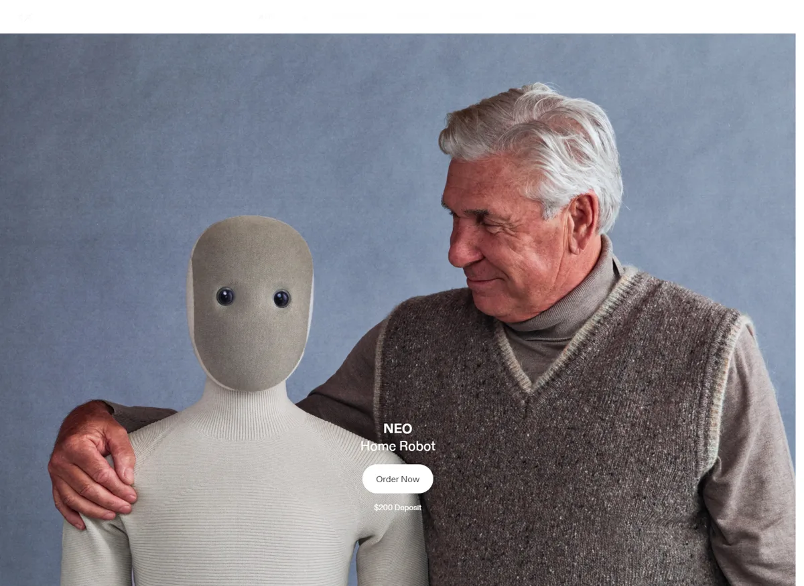
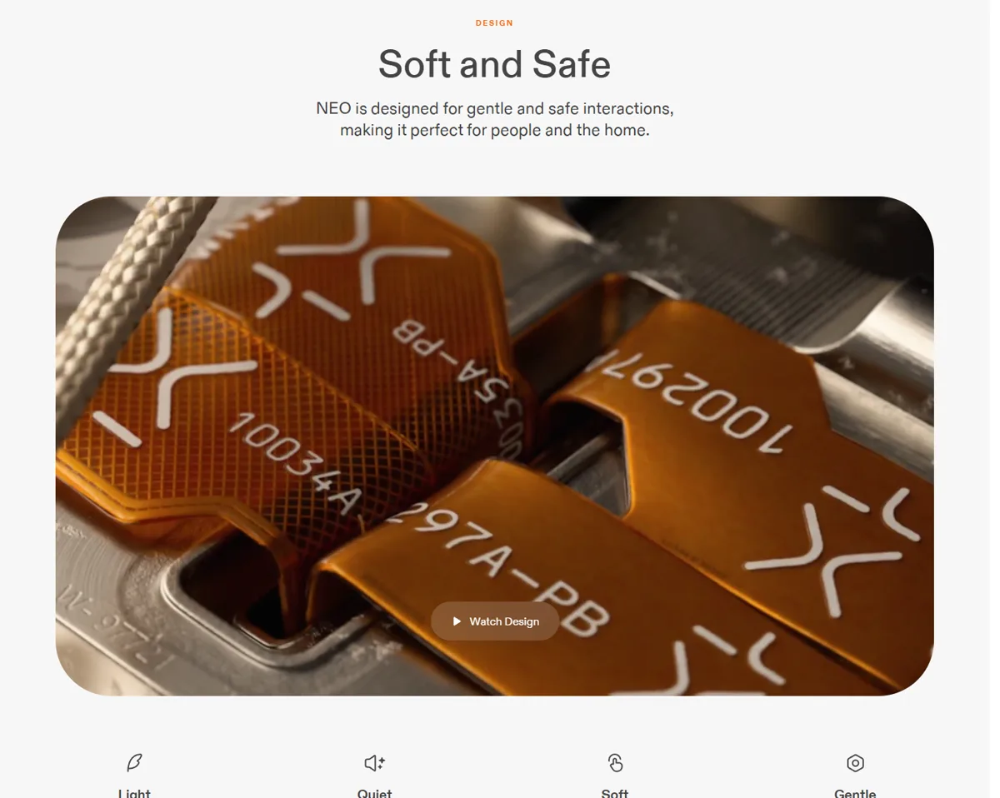
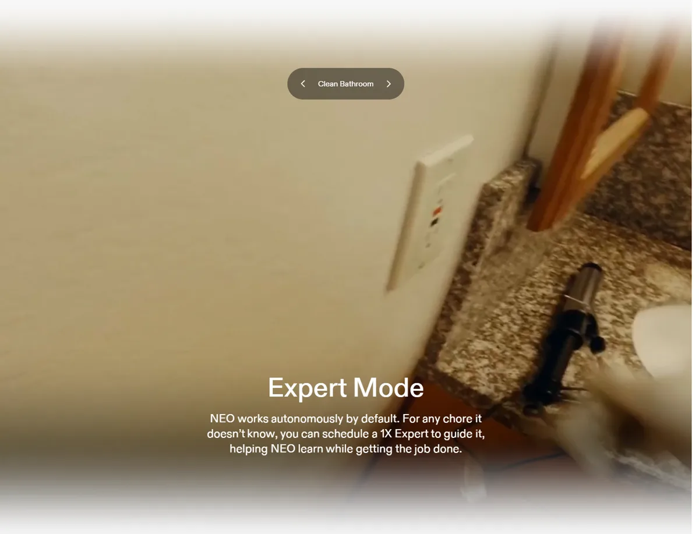

1X1X Technologies AS（前身 Halodi Robotics）
最早公开卖给家庭的人形机器人：NEO 售价 2 万美元或每月 499 美元，2025 年预售 5 天卖光首年产能；不会的家务由远程“1X 专家”操控示教。截至 10 月仍未见确认的客户交付，软银正谈判以约 60 亿美元估值控股。
一页结论
- 直接面向消费者：12 家里唯一明确把家庭作为首发市场、在官网开放下单的公司；订阅价对标一辆车的月供S1
- “远程专家”是落地关键也是争议：NEO 默认自主运行，不会的家务可预约 1X 员工远程操控，边做边教；2025 年媒体实测发现多数任务靠遥操作完成，引发隐私担忧S4S6
- 极致垂直整合：电机、电池、结构、传动、软体外壳、传感器自研自产，强调不依赖中国供应链；算力用 NVIDIA Jetson ThorS2
- 交付迟于承诺：工厂 4 月投产，但下线机器人先进入内部研发与家庭测试；截至 2026-10-19 未见官方宣布首批客户交付S2S6
- 估值回调：2025-09 寻求以 100 亿美元以上估值融资 10 亿美元；2026-08 媒体称软银以约 60 亿美元估值洽谈控股S4S7
01公司介绍
| 项目 | 内容 |
|---|---|
| 公司 | 1X Technologies，2014 年由挪威机器人专家 Bernt Øivind Børnich 以 Halodi Robotics 之名创立，2022 年更名S4S5 |
| 官网 | 1x.techS1 |
| 总部 | 美国加州帕洛阿尔托；制造在加州海沃德、圣卡洛斯，挪威莫斯另有制造S4S5 |
| 融资 | 2023-03 A2 轮 2,350 万美元（OpenAI 创业基金领投）；2024-01 B 轮 1 亿美元（EQT Ventures 领投，三星 NEXT 等跟投）S4 |
| 规模 | 海沃德工厂 5.8 万平方英尺，员工 200 多人S2 |
| 产品 | EVE（轮式工业人形，2022 年进入工厂）、NEO 家用人形、Redwood AI、1X World ModelS5S8 |

02公司战略
1X 赌的是“人形机器人要在家里和人一起生活，才能学会理解世界”。
- 从工厂转向家庭：2022 年轮式 EVE 进入工厂后，公司认为机器智能需要更完整的世界认知，2023 年转做家用 NEOS5
- 用早期用户换训练数据：CEO 表示需要早期用户的数据来提升自主能力；远程专家操控也在为模型积累示范数据S4S1
- 垂直整合 + 美国制造：核心零部件全部自研自产，强调更快迭代与更高安全标准S2
- 企业渠道补充：与 EQT 签约，2026–2030 年向其投资组合企业提供最多 1 万台 NEOS9
03产品定位与产品线
| 项目 | 内容 |
|---|---|
| 定位 | “家用机器人”：承担无聊重复的家务，同时能聊天、讲笑话、回答问题S1 |
| 目标用户 | 美国家庭（首发），国际交付更晚S1S6 |
| 价格 | 抢先体验版 2 万美元（含 3 年保修、优先交付）；标准订阅每月 499 美元；定金 200 美元可全额退还S1 |
| 交付顺序 | 先买断用户，后订阅用户；官方未给出具体到单的日期S6 |
| 产品演进 | NEO Beta（2024）→ NEO Gamma（2025）→ NEO 家用版（2026 交付）S5 |

04主要功能与技术路线
陪伴
语音问答、视觉与空间感知结合记忆做个性化互动S1

05解决方案与场景
06商业模式
| 模式 | 说明 |
|---|---|
| 买断 | 2 万美元，含 3 年保修与优先支持；官方称无需额外订阅，电费预计每天不到 1 美元S1S6 |
| 订阅 | 每月 499 美元，含入门任务包；到期可续订或退回S1S6 |
| 远程专家服务 | 按需预约专家操控（是否另收费未见官方说明）S1 |
| 企业批量 | EQT 框架协议，最多 1 万台S9 |
07上下游供应链与渠道
上游：算力与仿真
NVIDIA Jetson Thor；Isaac Sim / Isaac Lab 仿真训练S2
08主要客户与落地
09营收与财务
| 指标 | 数据 | 口径 |
|---|---|---|
| 收入 | 未披露 | 未上市 |
| 已披露融资 | A2 轮 2,350 万美元（2023）；B 轮 1 亿美元（2024） | S4 |
| 2025 年融资计划 | 寻求 10 亿美元，估值 100 亿美元以上 | 媒体报道，未确认完成S4S7 |
| 软银洽谈 | 以约 60 亿美元估值收购多数股权 | The Information 报道、路透转述，双方未回应S7 |
如果按官网价格把首年 1 万台预订全部兑现，买断口径对应约 2 亿美元收入（分析计算，实际取决于退订率和订阅比例）S1S2。
10落地痛点
11近期动态
12潜在风险分析意见
| 风险 | 表现 | 可能程度 |
|---|---|---|
| 交付与口碑 | 预订用户等待时间长，首批体验决定口碑（分析意见） | 高 |
| 隐私与监管 | 家庭内远程操控与数据上传S4S6 | 中 |
| 家庭安全事故 | 家中有老人儿童，任何事故影响整个品类（分析意见） | 中 |
| 控制权变化 | 软银若控股，战略可能调整S7 | 中 |
| 垂直整合的资金压力 | 自建全部零部件产线需要大量资本（分析意见） | 中 |
“可能程度”为基于现有公开信息的判断，不是量化预测。
13综合结论分析意见
优势
- 家庭市场先发
- 柔性安全设计
- 零部件全自研
劣势
- 自主能力依赖遥操作
- 交付延迟
- 收入未披露
机会
- 家庭数据飞轮
- EQT 企业渠道
- 软银资源
威胁
- Figure、Tesla 进入家庭
- 中国低价产品
对 AI 产品团队的启示
- “人在回路”是 AI 产品走向自主的过渡方案：远程专家既兜底体验，又产生训练数据，但必须把透明和授权设计清楚。
- 订阅价格锚定决定市场大小：每月 499 美元把机器人从“奢侈品”拉到“家庭月度开支”。
- 预售热度不等于交付能力：5 天卖光产能之后，真正的考验是交付节奏与首批口碑。
- 家庭场景的产品设计优先级不同：柔软、安静、可解释（耳环灯提示）比力量和速度更重要。
信息缺口
以下信息未找到可靠的公开来源，本报告不做推测。
- 收入与预订转化率
- 首批客户交付时间与数量
- 远程专家服务的收费与人力规模
- 软银交易是否完成
- 2025 年融资是否完成
来源
A 官方 · B 权威媒体或第三方 · C 社区（仅用于口碑与线索）。访问日期均为 2026-11-02。
- S1 · ANEO 产品页与订购页1X · 2026-11-02 访问
- S2 · A1X Opens NEO Factory in Hayward, CA1X（GlobeNewswire） · 2026-04-30
- S3 · A工厂页（Built in America）1X · 2026-11-02 访问
- S4 · C1X TechnologiesWikipedia · 2026-11-02 访问
- S5 · A关于 1X（发展历程）1X · 2026-11-02 访问
- S6 · C1X NEO: Price, Preorder and When It Ships (October 2026)Physical AI Lab · 2026-10-19
- S7 · BSoftBank in talks to buy stake in 1X at $6 billion valuation, The Information reportsReuters（The Star 转载） · 2026-08-27
- S8 · AAI 页面（1X World Model、Redwood AI）1X · 2025-06 至 2026-01
- S9 · C1X NEO Review: Price, Pre-Order & Release Date（含 EQT 合作）Robozaps · 2026
- S10 · ARobot fleet（企业 Charter Partner 计划）1X · 2026-11-02 访问